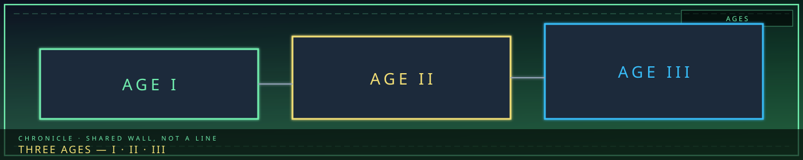

/// RAPID JUMP:
STATUS: ARCHIVE VERIFIED |
CLEARANCE: LEVEL-4 OVERSIGHT |
PROTOCOL: REVERIE DIRECTORATE
ARTICLE
DISCUSSION
SOURCE
HISTORY
YEAR 4,238 · DAWN OF HOPE
LORE & WORLD RECORD
The Three Ages
“History in Somnarak is not a line. It is three rooms that still share a wall.”

Overview
Somnarak’s history is three ages. Boundaries are not sharp — they blur, overlap, and contradict depending on who tells the story. This page is Age I / II / III only. Cheongula, Occlusihan, Consolihan, and the year table live on the Wars of Somnarak. SED / UCD / R.D. operations are not “historic wars”; they are present-age missions on their own articles. The old paste of Operations — Story Arcs onto this URL is gone.
THE BEFORE-TIME THE BECOMING THE STRUCTURING
(Unknown duration) (Unknown duration) (Current age)
│ │ │
▼ ▼ ▼
Han existed Han condensed Han became
but flowed into pockets, structural —
freely, like wells, rivers. the foundation
weather. People gathered. of reality.
The city rose.
Age I — The Before-Time (선시대)
Han existed — it always has. Grief, sorrow, injustice are as old as consciousness. In the Before-Time Han was ambient. It flowed like weather: through, into low places, dispersing with time.
The world was not paradise. People suffered. They grieved. They raged. Sorrow was personal — it belonged to the one who felt it, and when they died, it faded. Han did not build up. It did not crystallize. It did not become structural.
What existed: small communities — villages, tribes, wandering groups — with their own mourning rituals and release practices. Dream and Abyss were distant, otherworldly, not woven into daily life. No cities. No Architects. No Council. No system.
No complete record survives. The Archive’s deepest vaults hold fragments — contradictory, incomplete, corrupted. Dream echoes hold images and feelings, not facts. The wilderness may hold traces. Each faction reads the fragments differently. What they suggest: impermanence (sorrow passed, joy passed, nothing fixed); freedom with instability; a world the Council calls unsustainable.
Age II — The Becoming (변천)
The central mystery: Han began to accumulate. Instead of flowing through and dispersing, it pooled, crystallized, persisted. Why?
| Theory | Proponent | Claim |
|---|---|---|
| Inevitable | Council | Accumulation is natural. Before-Time was unsustainable. |
| Catastrophe | Some Architects | A single massive injustice — the First Sorrow — broke the cycle. |
| Choice | Heretical scholars | Someone chose to make Han structural. A deal was made. |
| Corruption | Weavers | Dream and Abyss drew too close. Han trapped between them. |
| Weight | Collectors | Enough sorrow, injustice, debt — gravity did the rest. |
Fragmented sequence: Han pooled in valleys, caves, the spaces between communities. People noticed — sorrow lingered, grief did not fade, the dead were not forgotten. Communities gathered around the pools (study, worship, flight, or no choice). Pools grew on collective suffering. Han crystallized into the first solid sorrow-material. The first structures were built not by Architects (they did not exist) but by desperate people using the only material available: solidified grief.
Where the greatest pool formed, people gathered. This settlement became Zone B — oldest, most wounded, jagged from unskilled construction. Survival, not design.
Age III — The Structuring (구조화)
The moment Han became structural — sorrow stopped being in the world and became the world — is the great unknown. Consequences are clear: Han is foundational. Buildings, laws, physical reality are held together by sorrow. The city needs Han; without it, structures collapse. Han accumulates faster than it disperses. The weight only grows.
During the Becoming, someone (or something) designed — or grew — the Alpha Tree. Unlike Zone B’s desperation, the Tree is a perfect diamond in chaos. Council: it was always there, grown from the first sorrow. Architects: someone built it; the geometry is too perfect. Keepers: blueprint fragments, builders’ names redacted. Weavers: the Dream designed it through us.
The Tree is the anchor. Six buildings manage Han flow. It extends up toward Dream and down toward Abyss. Without it the city collapses under its own sorrow.
| Phase | Zone | How | Why |
|---|---|---|---|
| 1st | B West | Desperate, organic, violent | Shelter from raw Han |
| 2nd | C East | Deliberate, architectural | Order — the system begins |
| 3rd | D Mantle | Designed to contain B | Containment of chaos |
| 4th | E Perimeter | Fortified, defensive | Wall against the unknown |
Governance coalesced from practical necessity, not ideology. First leaders were those who had survived the most — absorbed the heaviest Han and endured. They did not choose to rule; they were chosen by their weight. The Council of Sighs was not founded so much as it condensed, like Han. Fatalism was observed: “This is what is. We manage.”
The first Architects realized: if Han is structural, it can be shaped. Survivors who learned to work with what was killing them. Architect’s Hall is the sixth building of the Tree — last, most practical. They are the only Head that believes the future can be different even if the system cannot be broken.
Year numbers, Cheongula, Occlusihan, Consolihan: Wars. Present operations after 4200: three operations.
CANONICAL RECORD: Sourced from PROJECT_SOMNARAK.md — this chapter only. Other books stay on their own pages.
CANONICAL CROSS-LINKS & ATLAS CONNECTIONS